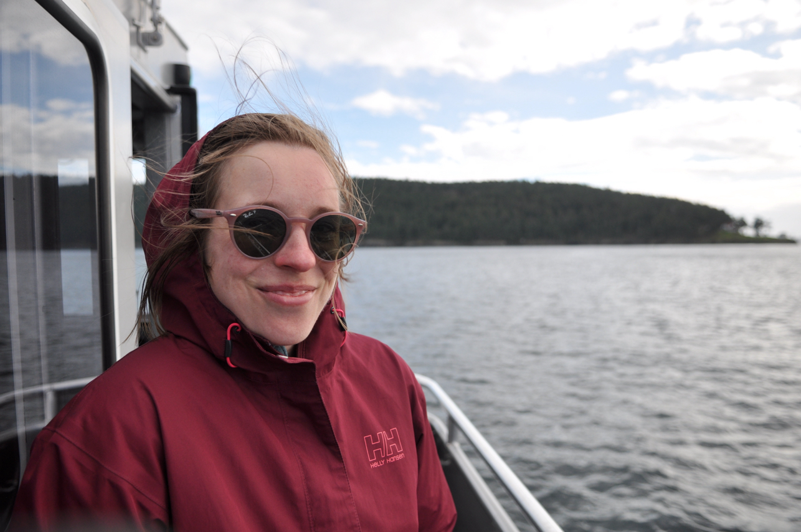

About me

Hi, welcome to my attempt at a website! I'm Dr. Camille Kessler, currently a postdoc at LMU and the beneficiary of a Swiss National Science Foundation Postdoc Mobility Fellowship. My scientific interests lie in recreating the evolutionary history of a species using DNA analysis. Through this broad goal, I get to touch on many different aspects involved in speciation and evolution, such as demography, selection, hybridisation, ancient DNA and so on... I seem to have gone with the flow for most of my academic journey, I’ve been unsure of the next step throughout, but it all unexpectedly worked out quite well.
I’m having most of my fun while coding, the bioinformatics is my favourite part of my work. I realised that bioinformatics was awesome during my master’s under the supervision of Prof. Daniel Croll, from the Laboratory of Evolutionary Genetics at the Université de Neuchâtel, Switzerland. There, and with the co-supervision from Christine Grossen (then at the University of Zürich), I worked on alpine ibex population genetics monitoring (more here ). After that, I joined the Swiss Institute of Bioinformatics in Lausanne to work as data analyst trainee. While this internship was a very good opportunity to develop my bioinformatics skills, it was also helpful in telling me what I did not want to do with my life: biomedical research on human RNA data. I’d always been unsure about doing a PhD, but I decided to go for it and ended up in working with Aaron Shafer in Canada, where I studied the speciation genomics of two North American deer species: white-tailed deer and mule deer (more here). I am currently at LMU (Munich) working on sea lions speciation genomics on a Swiss National Science Foundation Postdoc Mobility Fellowship.